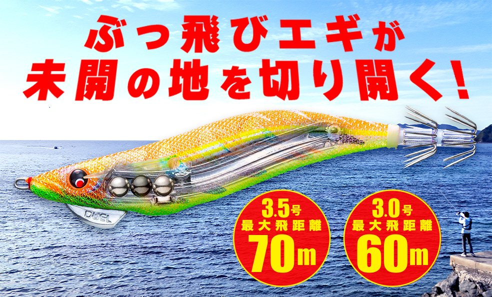
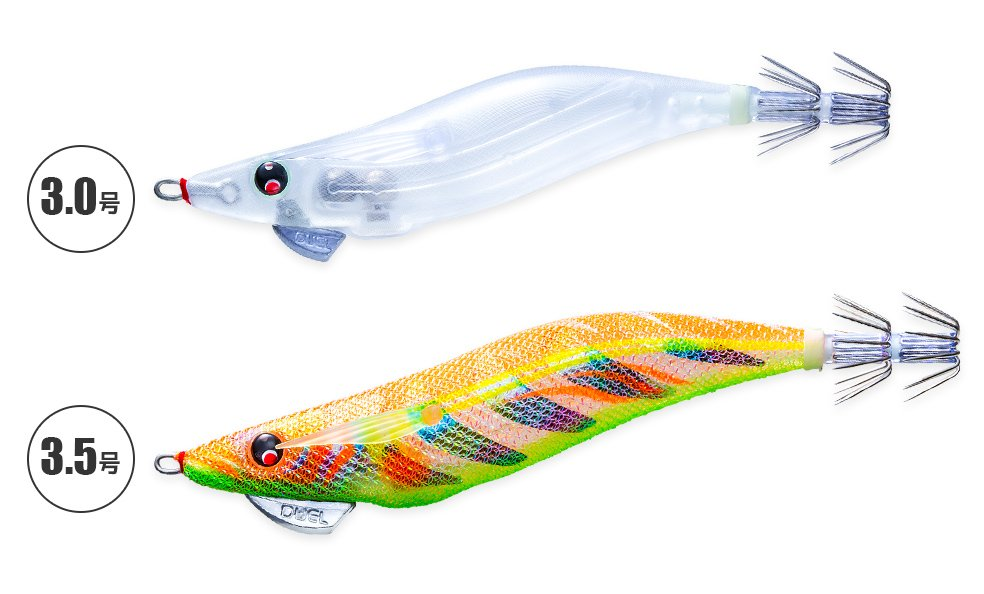
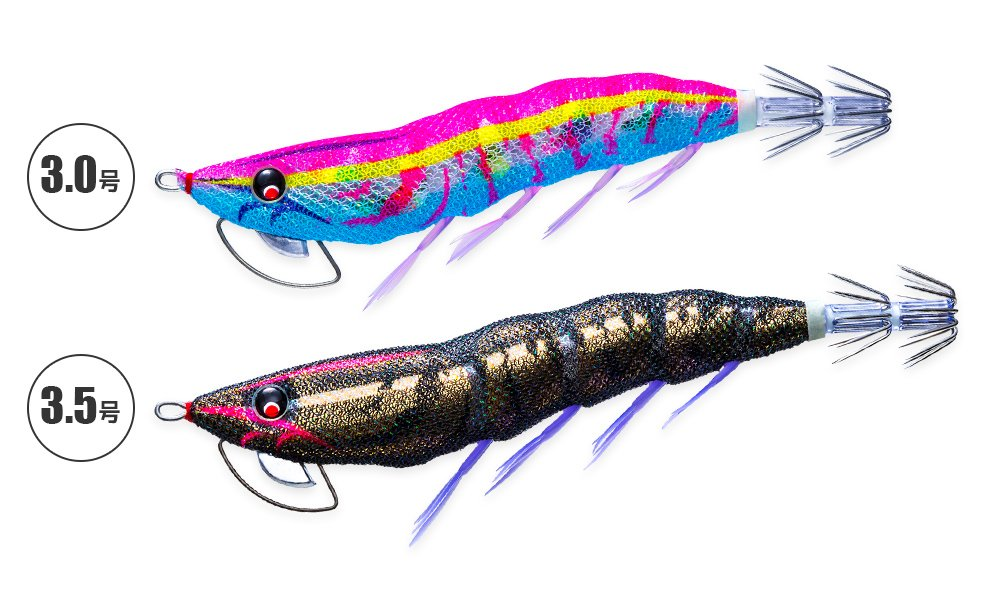
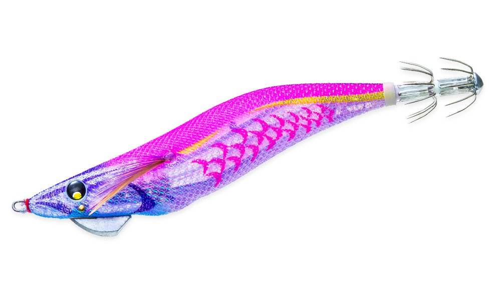
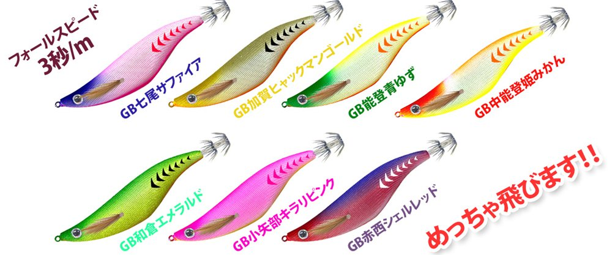
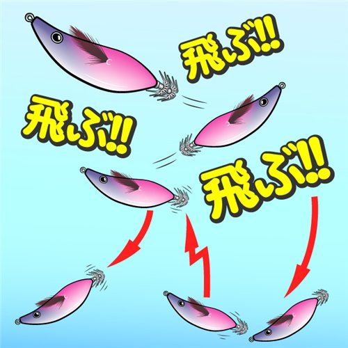
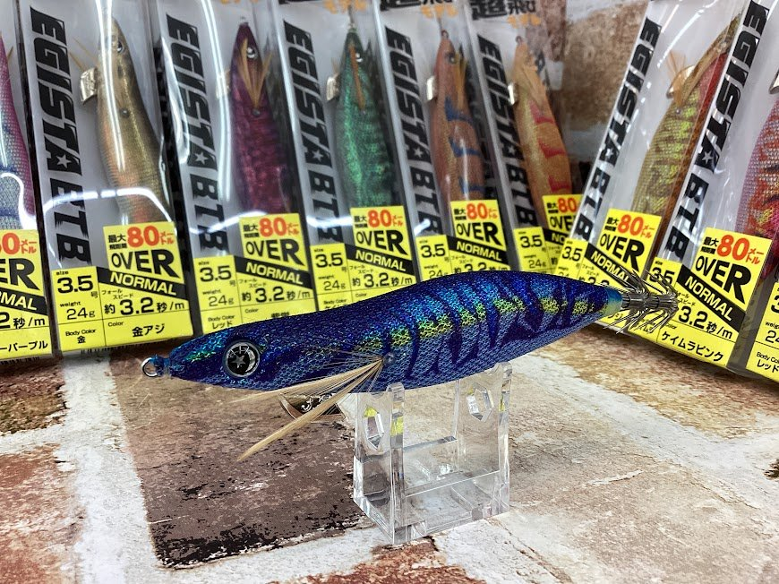
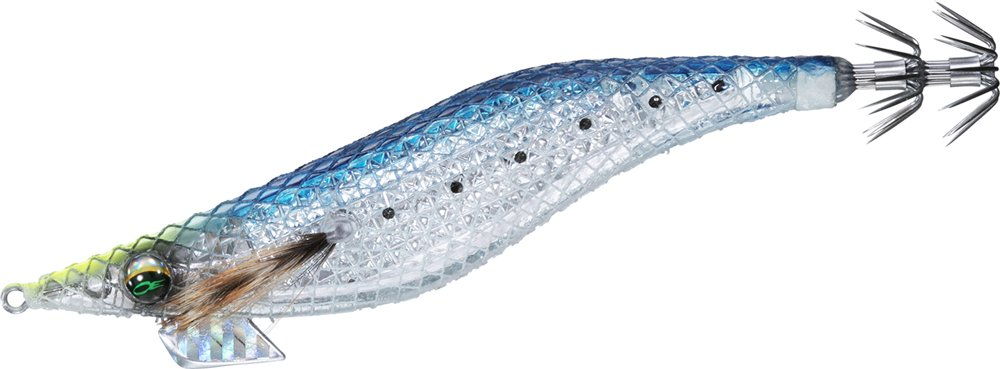
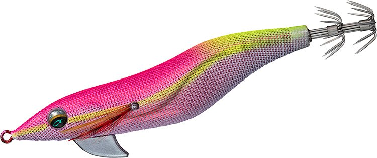
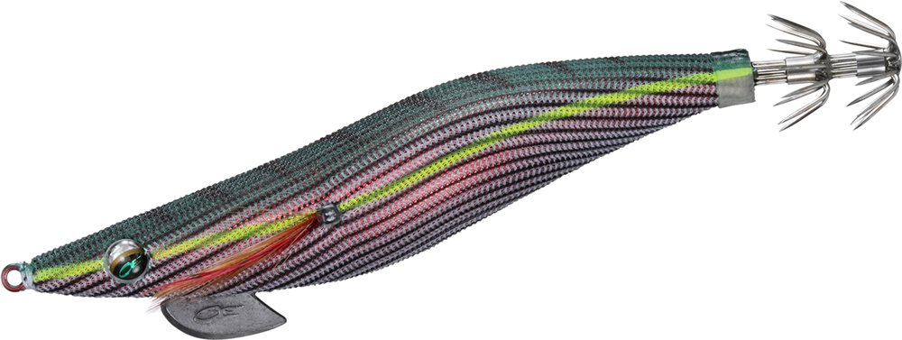

重心移動エギおすすめ9選
＜飛距離で選ぶ遠投エギング＞
エギングで「あと10m沖に届けば…」と思ったことはありませんか？ 重心移動を積んだエギなら、同じタックルのままでも、普通のエギより遠くのポイントまで届けられます。メーカーの公称では、最大70〜80mをうたうモデルもあります。
この記事では、飛距離を重視して選んだ重心移動エギ9本を、メーカーが示す飛距離・重さ・沈下速度で比べて紹介します。遠くのアオリイカが釣れる、遠投のコツと注意点もまとめました。
※2026年11月27日時点の情報です。価格や仕様は変わることがあるので、購入前に最新の情報を確認してください。
目次
エギングで飛距離が大事な理由
- 人が攻めていない沖のイカに届く：よく釣られる堤防ほど、足元から近い距離のイカはスレています。10m遠くに届くだけで、まだ誰のエギも見ていないイカに出会えるチャンスが増えます。
- サーフや浅い場所を広く探れる：遠浅のサーフや藻場では、イカのいる場所が岸から遠いことがよくあります。1投で探れる範囲が広いほど、イカを見つけるまでの時間が短くなります。
- 向かい風の日も釣りになる：普通のエギでは押し戻される風でも、重心移動エギは飛行姿勢が安定しているので、狙った場所まで届けやすくなります。
重心移動エギのしくみ
重心移動エギの中には、動くウエイト（重り）が入っています。キャストの時はウエイトが後ろへ移って矢のようにまっすぐ飛び、着水するとウエイトが前に戻って、普通のエギと同じ姿勢で沈む、というしくみです。

画像出典:デュエル公式HP
ウエイトを前で止める方法は、メーカーによって違います。
- マグネット式：DUELのマグQ・マグパタ・アオリーQ マグネットSS、ダイワのエメラルダスLCシリーズ（磁着式）、釣研のエギスタBTBなど。着水後に磁石がウエイトを固定するので、シャクリやフォールで重心がぶれにくいのが強みです。
- マグネットを使わない方式：ラッキークラフトの飛ぶキラリは「マグネット以外の全重心移動式」。シマノはルアーでおなじみの「ジェットブースト」を使っています。
重心移動エギ9本の飛距離比較
「公称の飛距離」は、メーカーや販売店が示している値です。メーカーによって「最大」と「平均」があり、計測の条件も違います。
| エギ | メーカー | 3.5号の |
沈下速度 |
公称の |
|---|---|---|---|---|
| マグQ タングステン | DUEL | 19g | 約3.5秒/ |
最大70mオーバー |
| イージーQ マグネットTG |
DUEL | 18.5g | 約3.2秒/ |
最大60mオーバー |
| アオリーQ マグネット SS | YO-ZURI／ |
18g | 約8秒/ |
最大65mオーバー |
| 飛ぶキラリ | ラッキークラフト | 24g |
3秒/ |
― |
| エギスタBTB | 釣研 | 24g | 3.2秒/ |
最大80m超え |
| ロングアピール ジェットブースト | シマノ | 17g | 約7.4秒/ |
平均52m |
| エメラルダス シャインLC | ダイワ | 18.5g | 3.75秒/ |
― |
| エメラルダス フォールLC ラトル | ダイワ | 21.5g | 3.5秒/ |
― |
| エメラルダス ダートLC | ダイワ | 20g | 3.5秒/ |
― |
※飛距離は、投げる人・タックル・風で大きく変わります。メーカーごとの公称値は、そのまま同じ物差しでは比べられません。
タングステン×マグネット
マグQ タングステン（DUEL）

画像出典:デュエル公式HP
キャッチコピーは「ぶっ飛びエギが未開の地を切り開く！」。タングステン球とマグネットの重心移動で、3.5号は公称の最大飛距離70mオーバーという、飛距離に振り切ったエギです。
- サイズ・重さ
- 3.0号 15.5g／3.5号 19g
- 沈下速度
- 約3.5秒/m
- 公称の最大飛距離
- 3.5号 70mオーバー／3.0号 60mオーバー
- 価格
- オープン価格
キャストの時はタングステン球がまっすぐ後ろへ動き、パワーをロスせずに飛んでいきます。着水すると球がすぐ前に戻り、強いマグネットで固定されるので、フォールやシャクリの時に重心がぶれません。
詳しいスペック・使い方・人気カラーは、マグQ タングステンの記事で紹介しています。
▼今すぐチェック

タングステン×マグネット＋パタパタ
イージーQ マグネットTG（マグパタ）（DUEL）

画像出典:デュエル公式HP
「パタパタ」で人気のイージーQに、タングステン×マグネットの重心移動を積んだモデルです。パタパタ史上最大の飛距離で、今まで届かなかった場所でパタパタフットのアピールを出せます。
- サイズ・重さ
- 3.0号 15g／3.5号 18.5g
- 沈下速度
- 約3.8秒/m（3.0号）／約3.2秒/m（3.5号）
- 公称の最大飛距離
- 3.5号 60mオーバー／3.0号 50mオーバー
- 価格
- オープン価格
足のパーツ「パタパタフット」がフォール中に動いてイカを誘うので、遠くのポイントでも見せる力を落としません。飛距離とアピールの両方がほしい時に向いています。
詳しいスペック・使い方・人気カラーは、イージーQ マグネットTG（マグパタ）の記事で紹介しています。
▼今すぐチェック

マグネット・スローシンキング
アオリーQ マグネット SS（YO-ZURI／デュエル）

画像出典:デュエル公式HP
「よく飛んで、じっくり見せる！」がコンセプト。公称の最大飛距離65mオーバーなのに、沈下速度は約8秒/mのスローシンキングという、浅場向けの重心移動エギです。
- サイズ・重さ
- 3.5号 18g
- 沈下速度
- 約8秒/m
- 公称の最大飛距離
- 65mオーバー
- 価格
- オープン価格
マグネット重心移動は、着水後にウエイトを戻すためのひと手間（ワンアクション）がいりません。理想的な沈下姿勢と安定した飛行姿勢をつくる「バランサーフック」付きで、浅場・藻場・サーフを広く探る時にぴったりです。
詳しいスペック・使い方・人気カラーは、アオリーQ マグネット SSの記事で紹介しています。
▼今すぐチェック

マグネットを使わない全重心移動
飛ぶキラリ（ラッキークラフト）

画像出典:ラッキークラフト公式HP
陸っぱりから「もう届かないって場所に届かせたい」という願いを形にしたエギです。ボディの外にシンカーがなく、マグネットを使わない「全重心移動式」という、ほかにない作りをしています。
- サイズ・重さ
- 1.9号 7g／2.2号 11g／2.7号 12g／3.2号 17g／3.7号 24g
- 沈下速度
- 3秒/m（全サイズ）
- 価格
- 1,150円（3.2号・3.7号、発売時の定価）
公式では「とにかく飛ぶ」「ライントラブルが少ない」ことを利点に挙げています。アクションはシンプルな跳ね上げ系で、リフト＆フォールで真価を発揮します。重心移動エギの中では値段が手ごろで、1.9号から3.7号まで小さいサイズがそろうのも魅力です。

画像出典:ラッキークラフト公式HP
詳しいスペック・使い方・人気カラーは、飛ぶキラリの記事で紹介しています。
▼今すぐチェック

BTBシステム（重心移動）
エギスタBTB（釣研）

画像出典:釣具のポイント
「最大飛距離80m超え」のうたい文句でデビューしたエギです。重心移動の「BTBシステム」と24gの重さで、とにかく遠くまで届けることに振り切っています。
- サイズ・重さ
- 3.5号 24g（ほかに3.0号・シャロータイプあり）
- 沈下速度
- 3.2秒/m（3.5号）
- うたい文句の最大飛距離
- 80m超え（3.5号）
ファットなボディで安定したフォールも売りにしています。とにかく飛距離を最優先したい人の第一候補です。
詳しいスペック・使い方・人気カラーは、エギスタBTBの記事で紹介しています。
▼今すぐチェック

ジェットブースト
セフィア クリンチ ロングアピール ジェットブースト（シマノ）

画像出典:釣具のポイント
止めても光る「フラッシュブースト」に、シマノの重心移動「ジェットブースト」を組み合わせたエギです。3.5号は沈下速度約7.4秒/mのスローシンキングなのに、公称の平均飛距離52mを出します。
- 品番
- QE-Z35W
- サイズ
- 3.0号／3.5号
- 重さ
- 17g（3.5号）
- 沈下速度
- 約4.2秒/m（3.0号）／約7.4秒/m（3.5号）
- 公称の平均飛距離
- 52m（3.5号）
紹介する中ではアオリーQ マグネットSSと並ぶスロー系で、17gと軽めでも重心移動で遠くまで届けられます。ゆっくり沈むフォールで、警戒心の強い春の大型のアオリイカにじっくり見せたい時に向いています。※スペックはシマノ公式HPの記載より。
詳しいスペック・使い方・人気カラーは、セフィア クリンチ ロングアピール ジェットブーストの記事で紹介しています。
▼今すぐチェック

磁着式重心移動
エメラルダス シャインLC レーザーインパクト（ダイワ）

画像出典:ダイワ公式HP
ダイワ初のレーザーインパクト搭載エギです。強い輝きの「MIRROR-CLE 360°」と、磁着式の重心移動を両立して、遠くのイカに光でアピールします。
- サイズ・重さ
- 2.5号 12g／3.0号 14g／3.5号 18.5g
- 沈下速度
- 4.75秒/m（2.5号）／4.25秒/m（3.0号）／3.75秒/m（3.5号）
- 価格
- 1,580円（税抜）
重心移動の部分を多角柱の反射鏡で包み、遠投性を高めながら、いろいろな角度にフラッシングを出します。飛距離よりも「遠くで目立たせる」ことを重視したい時の1本です。
詳しいスペック・使い方・人気カラーは、エメラルダス シャインLC レーザーインパクトの記事で紹介しています。
▼今すぐチェック

磁着式重心移動・ラトル
エメラルダス フォールLC ラトル（ダイワ）

画像出典:ダイワ公式HP
安定したフォール姿勢で定評のある「エメラルダス フォール」に、磁着式重心移動を積んだモデルです。「ぶっ飛び＆安定フォール」が売りで、着水後は磁石がウエイトを固定してフォール姿勢を保ちます。
- サイズ・重さ
- 2.0号 6.5g／2.5号 10g／3.0号 14.5g／3.5号 21.5g
- 沈下速度
- 3.5秒/m（3.5号）
- 価格
- 1,450〜1,500円（税抜）
ボリュームのあるボディで水中の姿勢が安定し、スレたイカに警戒されにくいのが特徴です。ラトル入りなので、シャクリの時は音でも広くアピールします。
詳しいスペック・使い方・人気カラーは、エメラルダス フォールLC ラトルの記事で紹介しています。
▼今すぐチェック

磁着式重心移動
エメラルダス ダートLC（ダイワ）

画像出典:ダイワ公式HP
「これからのエギのど真ん中」をうたう、ダイワのダート系エギです。細身のボディの極上ダートアクションと、磁着式重心移動の遠投性能を両立しています。
- サイズ・重さ
- 2.5号 11g／3.0号 16g／3.5号 20g
- 沈下速度
- 5.5秒/m（2.5号）／4.0秒/m（3.0号）／3.5秒/m（3.5号）
- 価格
- 1,410円（税抜）
安定した飛行姿勢でキャストが気持ちよく決まり、飛ばした先でキレのあるダートが出せます。スローシンキングの「TypeS」や、根掛かりしにくい「ネガード」もあります。
詳しいスペック・使い方・人気カラーは、エメラルダス ダートLCの記事で紹介しています。
根掛かり対策をしたモデルは、エメラルダス ダートLC ネガードの記事で紹介しています。
▼今すぐチェック

もっと遠くへ飛ばすコツ
- ロッドは8ft6in〜9ftクラス：長いロッドのほうが、振り幅が大きくなって飛距離が出ます。
- PEラインは0.6号前後：細いラインほど空気や風の抵抗が小さくなります。リーダーとの結び目は小さくまとめ、ガイドに引っかからないようにしましょう。
- タラシは長めにとって、ロッド全体を曲げて投げる：エギの重さをロッドに乗せてから、振り抜く方向に押し出すように投げると、重心移動のウエイトがしっかり後ろに移って、まっすぐ飛びます。
- 追い風を味方に：風を背にできる立ち位置を選ぶだけで、飛距離は大きく変わります。
重心移動エギの注意点
- 値段が少し高め：オープン価格のものも多く、普通のエギより高めです。根掛かりの多い場所では、ロストにも気をつけましょう。比べた中では、飛ぶキラリが手ごろです。
- ウエイトが前に戻ったか気にしておく：マグネット式はほとんど自動で戻りますが、着水後に軽く一度シャクるか、ラインを張ってから沈め始めると、確実に前で固定された状態からフォールに入れます。
- 重心移動を付けないという選択もある：ジャッカルのゲキダキ カミナリのように、あえてウエイトを固定して「毎回の飛距離のばらつき」を抑えたエギもあります。投げる人によっては、こちらのほうが安定することもあります。
目的別の選び方
| こんな |
おすすめ |
|---|---|
| とにかく |
エギスタBTB・ |
| サーフや |
アオリーQ マグネット SS・ |
| 遠くでも |
イージーQ マグネットTG |
| 光で |
エメラルダス シャインLC レーザーインパクト |
| ダートで |
エメラルダス ダートLC |
| 安定した |
エメラルダス フォールLC ラトル |
| 値段を |
飛ぶキラリ |
よくある質問
Q. 重心移動エギは普通のエギより釣れる？
A. エギそのものの釣れやすさが上がるわけではありませんが、人が届けていない場所まで届くので、イカに出会えるチャンスは増えます。特にスレた堤防やサーフで効果を感じやすいです。
Q. 重さが重いエギほどよく飛ぶ？
A. 重さも大事ですが、それだけでは決まりません。キャスト中の姿勢が安定するかどうかで飛距離は大きく変わるので、重心移動で飛行姿勢を整えることが遠投のポイントになります。
Q. 何号を選べばいい？
A. 飛距離を重視するなら3.5号が基本です。秋の小さいイカや軽いタックルなら、3.0号や飛ぶキラリの小さいサイズも選べます。沈む速さは、エギ沈下速度計算で水深ごとに確かめられます。
まとめ
重心移動エギは、普通のエギでは届かない沖のアオリイカに出会うための強い味方です。飛距離最優先ならエギスタBTBやマグQ タングステン、浅場をじっくり見せるならアオリーQ マグネットSSやロングアピール ジェットブースト、と目的に合わせて選びましょう。1本は重心移動エギをボックスに入れておくと、「あと少し届けば」の場面で釣れるチャンスが広がります。